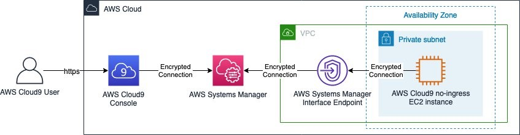

VPC 和子网注意事项¶
运行 EKS 集群需要了解 AWS VPC 网络，以及 Kubernetes 网络。
我们建议您在开始设计 VPC 或将集群部署到现有 VPC 之前，先了解 EKS 控制平面通信机制。
在设计要与 EKS 一起使用的 VPC 和子网时，请参阅集群 VPC 注意事项和Amazon EKS 安全组注意事项。
概述¶
EKS 集群架构¶
EKS 集群由两个 VPC 组成：
- 一个由 AWS 管理的 VPC，托管 Kubernetes 控制平面。该 VPC 不会出现在客户账户中。
- 一个由客户管理的 VPC，托管 Kubernetes 节点。容器运行在这里，以及其他由客户管理的 AWS 基础设施，如集群使用的负载均衡器。该 VPC 出现在客户账户中。在创建集群之前，您需要创建客户管理的 VPC。如果您没有提供 VPC，eksctl 会创建一个。
客户 VPC 中的节点需要能够连接到 AWS VPC 中的托管 API 服务器端点。这允许节点向 Kubernetes 控制平面注册并接收运行应用程序 Pod 的请求。
节点通过 (a) EKS 公共端点或 (b) EKS 管理的跨账户弹性网络接口 (X-ENI) 连接到 EKS 控制平面。在创建集群时，您需要指定至少两个 VPC 子网。EKS 会在指定的每个子网中放置一个跨账户 ENI (也称为集群子网)。Kubernetes API 服务器使用这些跨账户 ENI 与部署在客户管理的集群 VPC 子网上的节点进行通信。

当节点启动时，EKS 引导脚本会执行并安装 Kubernetes 节点配置文件。作为每个实例的启动过程的一部分，容器运行时代理、kubelet 和 Kubernetes 节点代理会启动。
为了注册节点，Kubelet 会联系 Kubernetes 集群端点。它会通过公共端点或 VPC 内的私有端点建立连接。Kubelet 会定期接收来自端点的 API 指令并提供状态更新和心跳。
EKS 控制平面通信¶
EKS 有两种方式控制对集群端点的访问。端点访问控制允许您选择端点是否可以从公共互联网访问或仅通过您的 VPC 访问。您可以启用公共端点(这是默认设置)、私有端点或同时启用两者(公共和私有)。
集群 API 端点的配置决定了节点与控制平面通信的路径。请注意，这些端点设置可以随时通过 EKS 控制台或 API 进行更改。
公共端点¶
这是新 Amazon EKS 集群的默认行为。当仅启用集群的公共端点时，源自您集群 VPC 内部(如工作节点到控制平面通信)的 Kubernetes API 请求会离开 VPC，但不会离开 Amazon 的网络。为了让节点连接到控制平面，它们必须具有公共 IP 地址，并且有一条通往互联网网关或 NAT 网关的路由，以便它们可以使用 NAT 网关的公共 IP 地址。
公共和私有端点¶
当同时启用公共和私有端点时，来自 VPC 内部的 Kubernetes API 请求会通过您 VPC 内的 X-ENI 与控制平面通信。您的集群 API 服务器可以从互联网访问。
私有端点¶
当仅启用私有端点时，您的 API 服务器无法从互联网公开访问。所有到您的集群 API 服务器的流量必须来自您集群的 VPC 或连接的网络。节点通过您 VPC 内的 X-ENI 与 API 服务器通信。请注意，集群管理工具必须能够访问私有端点。了解如何从 Amazon VPC 外部连接到私有 Amazon EKS 集群端点。
请注意，集群的 API 服务器端点由公共 DNS 服务器解析为来自 VPC 的私有 IP 地址。过去，该端点只能从 VPC 内部解析。
VPC 配置¶
Amazon VPC 支持 IPv4 和 IPv6 寻址。Amazon EKS 默认支持 IPv4。VPC 必须与之关联一个 IPv4 CIDR 块。您也可以选择将多个 IPv4 无类别域间路由 (CIDR) 块和多个 IPv6 CIDR 块与您的 VPC 关联。创建 VPC 时，您必须从 RFC 1918 中指定的私有 IPv4 地址范围为 VPC 指定一个 IPv4 CIDR 块。允许的块大小介于 /16 前缀(65，536 个 IP 地址)和 /28 前缀(16 个 IP 地址)之间。
创建新的 VPC 时，您可以附加一个 IPv6 CIDR 块，更改现有 VPC 时最多可以附加五个。IPv6 CIDR 块大小的前缀长度可以在 /44 和 /60 之间，而 IPv6 子网可以在 /44 和 /64 之间。您可以从 Amazon 维护的 IPv6 地址池中请求一个 IPv6 CIDR 块。有关更多信息，请参阅 VPC 用户指南中的VPC CIDR 块部分。
Amazon EKS 集群支持 IPv4 和 IPv6。默认情况下，EKS 集群使用 IPv4 IP。在集群创建时指定 IPv6 将启用使用 IPv6 集群。IPv6 集群需要双栈 VPC 和子网。
在集群创建期间，Amazon EKS 建议您至少使用两个位于不同可用区的子网。在集群创建期间传入的子网称为集群子网。创建集群时，Amazon EKS 会在您指定的子网中创建最多 4 个跨账户 (x-account 或 x-ENI) ENI。这些 x-ENI 始终会部署并用于集群管理流量，如日志传送、exec 和代理。有关完整的VPC 和子网要求详情，请参阅 EKS 用户指南。
Kubernetes 工作节点可以运行在集群子网中，但不建议这样做。在集群升级期间，Amazon EKS 会在集群子网中配置额外的 ENI。当您的集群扩展时，工作节点和 Pod 可能会消耗集群子网中的可用 IP。因此，为了确保有足够的可用 IP，您可能需要考虑使用专用的集群子网，其网络掩码为 /28。
Kubernetes 工作节点可以运行在公共或私有子网中。子网是公共还是私有取决于子网内的流量是否通过互联网网关路由。公共子网的路由表中有一个条目，通过互联网网关连接互联网，但私有子网没有。
源自其他地方并到达您节点的流量称为入站流量。源自节点并离开网络的流量称为出站流量。在配置了互联网网关的子网中具有公共或弹性 IP 地址 (EIP) 的节点允许来自 VPC 外部的入站流量。私有子网通常包括一个NAT 网关,它只允许来自 VPC 内部的入站流量到达节点，同时仍允许来自节点的出站流量离开 VPC。
在 IPv6 世界中，每个地址都是可路由的互联网地址。与节点和 Pod 关联的 IPv6 地址是公共的。通过在 VPC 中实现仅出站互联网网关 (EIGW) 来支持私有子网，允许出站流量但阻止所有入站流量。实施 IPv6 子网的最佳实践可以在 VPC 用户指南中找到。
您可以通过三种不同的方式配置 VPC 和子网：¶
仅使用公共子网¶
节点和入站资源(如负载均衡器)都在同一个公共子网中创建。使用kubernetes.io/role/elb标记公共子网以构建面向互联网的负载均衡器。在此配置中，集群端点可以配置为公共、私有或两者(公共和私有)。
使用私有和公共子网¶
节点在私有子网上创建，而入站资源在公共子网上实例化。您可以启用公共、私有或两者(公共和私有)访问集群端点。根据集群端点的配置，节点流量将通过 NAT 网关或 ENI 进入。
仅使用私有子网¶
节点和入站资源都在私有子网中创建。使用kubernetes.io/role/internal-elb子网标记来构建内部负载均衡器。访问您的集群端点需要 VPN 连接。您必须为 EC2 和所有 Amazon ECR 和 S3 存储库启用 AWS PrivateLink。只应启用集群的私有端点。我们建议在配置私有集群之前先通读 EKS 私有集群要求。
跨 VPC 通信¶
在许多场景中，您需要多个 VPC 和部署在这些 VPC 中的单独 EKS 集群。
您可以使用 Amazon VPC Lattice 在多个 VPC 和账户之间一致且安全地连接服务，而无需由诸如 VPC 对等、AWS PrivateLink 或 AWS Transit Gateway 之类的服务提供额外的连接。在此处了解更多信息。

Amazon VPC Lattice 在 IPv4 和 IPv6 的链路本地地址空间中运行，为可能具有重叠 IPv4 地址的服务提供连接。为了提高运营效率，我们强烈建议将 EKS 集群和节点部署到不重叠的 IP 范围。如果您的基础设施包含具有重叠 IP 范围的 VPC，您需要相应地设计您的网络。我们建议私有 NAT 网关或自定义网络模式下的 VPC CNI，结合传输网关,将 EKS 上的工作负载集成以解决重叠 CIDR 的挑战，同时保留可路由的 RFC1918 IP 地址。

如果您是服务提供商并希望与另一个账户中的客户 VPC 共享您的 Kubernetes 服务和入口(ALB 或 NLB)，请考虑使用 AWS PrivateLink,也称为端点服务。
跨多个账户共享 VPC¶
许多企业采用共享 Amazon VPC 作为跨多个 AWS 账户简化网络管理、降低成本和提高安全性的一种方式，在 AWS 组织中。他们利用 AWS Resource Access Manager (RAM) 安全地与单个 AWS 账户、组织单位 (OU) 或整个 AWS 组织共享支持的 AWS 资源。
您可以使用 AWS RAM 在另一个 AWS 账户中的共享 VPC 子网中部署 Amazon EKS 集群、托管节点组和其他支持 AWS 资源(如负载均衡器、安全组、端点等)。下图描述了一个示例高级架构。这允许中央网络团队控制网络构造(如 VPC、子网等)，同时允许应用程序或平台团队在各自的 AWS 账户中部署 Amazon EKS 集群。此场景的完整演练可在 github 存储库中找到。

使用共享子网时的注意事项¶
-
Amazon EKS 集群和工作节点可以在同一 VPC 的共享子网中创建。Amazon EKS 不支持跨多个 VPC 创建集群。
-
Amazon EKS 使用 AWS VPC 安全组 (SG) 来控制 Kubernetes 控制平面与集群工作节点之间的流量。安全组也用于控制工作节点与其他 VPC 资源和外部 IP 地址之间的流量。您必须在应用程序/参与者账户中创建这些安全组。确保您打算为 Pod 使用的安全组也位于参与者账户中。您可以配置安全组中的入站和出站规则，以允许与位于中央 VPC 账户中的安全组之间的必要流量。
-
在 Amazon EKS 集群所在的参与者账户中创建 IAM 角色和关联的策略。这些 IAM 角色和策略对于授予 Amazon EKS 管理的 Kubernetes 集群、节点和在 Fargate 上运行的 Pod 所需的必要权限至关重要。这些权限使 Amazon EKS 能够代表您调用其他 AWS 服务。
-
您可以遵循以下方法之一，允许 k8s Pod 跨账户访问 AWS 资源(如 Amazon S3 存储桶、DynamoDB 表等)：
-
基于资源的策略方法:如果 AWS 服务支持资源策略，您可以添加适当的资源策略，允许跨账户访问分配给 kubernetes Pod 的 IAM 角色。在这种情况下，OIDC 提供程序、IAM 角色和权限策略存在于应用程序账户中。要查找支持资源策略的 AWS 服务，请参阅 与 IAM 协作的 AWS 服务,并查看 Resource Based 列中标有 Yes 的服务。
-
OIDC 提供程序方法:OIDC 提供程序、IAM 角色、权限和信任策略等 IAM 资源将在存在资源的其他参与者 AWS 账户中创建。这些角色将分配给应用程序账户中的 Kubernetes Pod，以便它们可以访问跨账户资源。请参阅Kubernetes 服务账户的跨账户 IAM 角色博客，了解此方法的完整演练。
-
-
您可以在应用程序或中央网络账户中部署 Amazon Elastic Load Balancer (ELB) 资源 (ALB 或 NLB)，以路由到 k8s Pod 的流量。请参阅通过跨账户负载均衡器公开 Amazon EKS Pod 演练，了解在中央网络账户中部署 ELB 资源的详细说明。此选项提供了增强的灵活性，因为它使中央网络账户能够完全控制负载均衡器资源的安全配置。
-
使用 Amazon VPC CNI 的
自定义网络功能时，您需要使用中央网络账户中列出的可用区 (AZ) ID 映射来创建每个ENIConfig。这是因为每个 AWS 账户中物理 AZ 与 AZ 名称的映射是随机的。
安全组¶
安全组控制允许到达和离开与之关联的资源的流量。Amazon EKS 使用安全组来管理控制平面和节点之间的通信。创建集群时，Amazon EKS 会创建一个名为 eks-cluster-sg-my-cluster-uniqueID 的安全组。EKS 将这些安全组关联到托管的 ENI 和节点。默认规则允许您的集群和节点之间的所有流量自由流动，并允许所有出站流量到达任何目的地。
创建集群时，您可以指定自己的安全组。在指定自己的安全组时，请参阅安全组建议。
建议¶
考虑多可用区部署¶
AWS 区域提供多个物理隔离的可用区 (AZ)，这些可用区通过低延迟、高吞吐量和高度冗余的网络连接。通过可用区，您可以设计和运行能够在可用区之间自动故障转移而不中断的应用程序。Amazon EKS 强烈建议将 EKS 集群部署到多个可用区。在创建集群时，请考虑指定至少两个可用区的子网。
运行在节点上的 Kubelet 会自动将标签(如 topology.kubernetes.io/region=us-west-2 和 topology.kubernetes.io/zone=us-west-2d)添加到节点对象。我们建议结合使用节点标签和Pod 拓扑分布约束,以控制 Pod 在区域之间的分布方式。这些提示使 Kubernetes 调度器能够更好地放置 Pod，以提高预期可用性，降低相关故障影响整个工作负载的风险。请参阅将节点分配给 Pod,了解节点选择器和 AZ 分布约束的示例。
您可以在创建节点时定义子网或可用区。如果未配置子网，节点将放置在集群子网中。EKS 对托管节点组的支持会自动将节点跨多个可用区分布在可用容量上。Karpenter 将根据工作负载定义的拓扑分布限制，在指定的 AZ 中扩展节点。
AWS Elastic Load Balancer 由 Kubernetes 集群的 AWS Load Balancer Controller 管理。它为 Kubernetes 入口资源配置应用程序负载均衡器 (ALB)，为类型为 LoadBalancer 的 Kubernetes 服务配置网络负载均衡器 (NLB)。Elastic Load Balancer 控制器使用标签来发现子网。ELB 控制器需要至少两个可用区 (AZ) 才能成功配置入口资源。请考虑在至少两个 AZ 中设置子网，以利用地理冗余带来的安全性和可靠性。
将节点部署到私有子网¶
包含公共和私有子网的 VPC 是部署 Kubernetes 工作负载到 EKS 的理想方法。请考虑在两个不同的可用区中设置至少两个公共子网和两个私有子网。公共子网的相关路由表包含一条到互联网网关的路由。Pod 可以通过 NAT 网关与互联网交互。在 IPv6 环境中，仅出站互联网网关 (EIGW) 支持私有子网。
将节点实例化到私有子网提供了对节点流量的最大控制，并适用于绝大多数 Kubernetes 应用程序。入站资源(如负载均衡器)在公共子网中实例化，并将流量路由到运行在私有子网上的 Pod。
如果您需要严格的安全性和网络隔离，请考虑仅私有模式。在此配置中，在 AWS 区域的 VPC 中的三个不同可用区内部署三个私有子网。部署到子网中的资源无法访问互联网，互联网也无法访问子网中的资源。为了让您的 Kubernetes 应用程序访问其他 AWS 服务，您必须配置 PrivateLink 接口和/或网关端点。您可以使用 AWS Load Balancer Controller 设置内部负载均衡器，将流量重定向到 Pod。私有子网必须标记(kubernetes.io/role/internal-elb: 1),以便控制器配置负载均衡器。为了让节点向集群注册，集群端点必须设置为私有模式。请访问私有集群指南了解完整的要求和注意事项。
考虑为集群端点配置公共和私有模式¶
Amazon EKS 提供公共模式、公共和私有模式以及仅私有模式的集群端点。默认模式是公共模式，但我们建议将集群端点配置为公共和私有模式。此选项允许您集群 VPC 内部的 Kubernetes API 调用(如节点到控制平面的通信)使用私有 VPC 端点，并且流量保持在您集群的 VPC 内。同时，您的集群 API 服务器可以从互联网访问。但是，我们强烈建议限制可以使用公共端点的 CIDR 块。了解如何配置公共和私有端点访问，包括限制 CIDR 块。
当您需要安全性和网络隔离时，我们建议使用私有端点。我们建议使用 EKS 用户指南中列出的任一选项私下连接到 API 服务器。
仔细配置安全组¶
Amazon EKS 支持使用自定义安全组。任何自定义安全组都必须允许节点与 Kubernetes 控制平面之间的通信。请检查端口要求,如果您的组织不允许开放通信，请手动配置规则。
EKS 将您在集群创建期间提供的自定义安全组应用于托管接口 (X-ENI)。但是，它不会立即将它们与节点关联。在创建节点组时，强烈建议手动关联自定义安全组。请考虑启用 securityGroupSelectorTerms,以允许 Karpenter 节点模板在自动扩展节点期间发现自定义安全组。
我们强烈建议创建一个安全组，以允许所有节点间通信流量。在引导过程中，节点需要出站互联网连接才能访问集群端点。评估出站访问要求，如本地连接和容器注册表访问，并相应地设置规则。在投入生产之前，我们强烈建议您在开发环境中仔细检查连接。
在每个可用区部署 NAT 网关¶
如果您在私有子网(IPv4 和 IPv6)中部署节点，请考虑在每个可用区 (AZ) 创建一个 NAT 网关，以确保区域独立的架构并减少跨 AZ 支出。每个 AZ 中的 NAT 网关都具有冗余实现。
使用 Cloud9 访问私有集群¶
AWS Cloud9 是一个可以在私有子网中安全运行的基于 Web 的 IDE，无需入站访问，使用 AWS Systems Manager。也可以禁用 Cloud9 实例的出站。了解如何使用 Cloud9 访问私有集群和子网。
